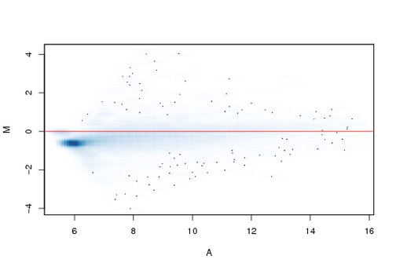

Figure 4.2:
MA-plot for the first array. Note the downward curvature of the distribution at the lower end of the A range: for low intensity spots, M tends to be negative, that is, the red color channel is dimmer than the green.